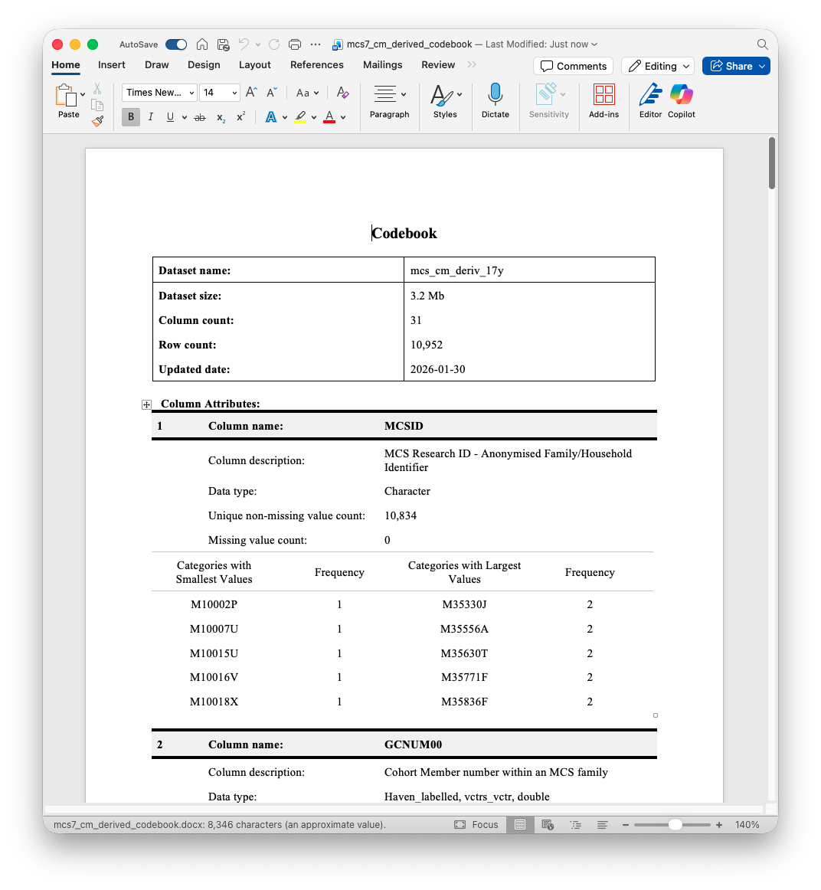

library(tidyverse)
library(haven)
library(glue)
library(labelled)
library(codebookr)
library(summarytools)
mcs_fld <- Sys.getenv("mcs_fld")
ncds_fld <- Sys.getenv("ncds_fld")
mcs_cm_derived_17y <- glue("{mcs_fld}/17y/mcs7_cm_derived.dta") %>%
read_dta()4 Data Discovery
A sine qua non of longitudinal research is working out what variables are available in a given study, what their values indicate, and in which data files the variables are stored. This can be a surprisingly time-consuming process, but can be made more efficient using R. In this chapter, we will look at three packages for exploring data files: codebookr,labelled and summarytools. We will also look at stringr for working with character vectors.
The raw data are in Stata (.dta) format, so we will load them using the read_dta() function from the haven package. Let’s load the tidyverse and haven packages, as well as codebook, labelled, summarytools and glue, the latter of which we’ll use to construct file paths. Let’s also load the cohort member derived variable dataset from Sweep 7 (17y) of the MCS:
4.1 Creating Codebooks using codebookr::codebook()
We can start by creating a codebook using the codebook() function from codebookr. This is straightforward and involves two steps. First, creating the codebook as an R object. Second, saving the codebook as a Word (.docx) document. The R object isn’t useful in itself. It is the .docx file that we will use.
mcs_17y_codebook <- codebook(mcs_cm_derived_17y)
print(mcs_17y_codebook, "outputs/mcs7_cm_derived_codebook.docx")Below is a screenshot of the results. You can open the generated Word document to view the full codebook.

The resulting .docx contains information on each variable including metadata such as variable labels, value labels, and basic descriptive statistics (e.g., mean, standard deviation, min, max, number of missing values). UKDS files typically come bundled with data dictionaries, but these can be limited (for instance, not including descriptive statistics), and so codebookr outputs can be better to work with.
There is some customisation possible within the codebook() function - see the help file (?codebook) for more information. Note, codebook() can take a while to run, especially for larger datasets.
4.1.1 Task I
Create a codebook for the NCDS Sweep 9 (55y) derived variable dataset (
55y/ncds_2013_derived.dta). Identify variables related to the cohort member’s weight.
Reveal the solution
ncds_55y <- glue("{ncds_fld}/55y/ncds_2013_derived.dta") %>%
read_dta()
ncds_55y_codebook <- codebook(ncds_55y)
print(ncds_55y_codebook, "outputs/ncds_55y_derived_codebook.docx")4.2 Searching Datasets with labelled::lookfor()
An issue with the codebook() output is that, being outside R, one cannot search through it programmatically using R functions. The lookfor() function from the labelled package provides such functionality. labelled is not part of the tidyverse, but does follow its design philosophy.
lookfor() has a simple interface - you provide a data.frame (or tibble) and a search string or set of search strings. The function then identifies variables that match any of these strings, searching not just in the variable names, but also in variable and value labels. For instance, to find variables related to “overweight” in mcs_cm_derived_17y, we can enter the following:
lookfor(mcs_cm_derived_17y, "overweight") pos variable label col_type missing values
4 GCOVWGT7 Overweight Cut-Off poi~ dbl+lbl 0 [-1] Not applicable
7 GCOVWTU7 Overweight cut-Off poi~ dbl+lbl 0 [-1] Not applicable
10 GCOBFLG7 MCS7 Obesity flag - IO~ dbl+lbl 0 [-1] Not applicable
[0] Not overweight (in~
[1] Overweight
[2] Obese
11 GCUK90O7 MCS7 Obesity flag - UK~ dbl+lbl 0 [-1] Not applicable
[1] Underweight
[2] Healthy weight
[3] Overweight
[4] Obese This function call returned information on four variables. By default, the search is not case-sensitive, behaviour that can be changed by setting the argument ignore.case = FALSE. The labels and values arguments can also be changed to exclude these metadata from the search. Note, calling lookfor() without specifying a search string will return information on all variables in the dataset.
Converting lookfor() output into a tibble (with as_tibble()) allows one to use dplyr functions to search the output further still. Here, we use the str_detect() function from stringr to keep only those rows that contain “IOTF” in the variable label:
lookfor(mcs_cm_derived_17y, "overweight") %>%
as_tibble() %>%
filter(str_detect(label, "IOTF"))# A tibble: 2 × 7
pos variable label col_type missing levels value_labels
<int> <chr> <chr> <chr> <int> <name> <named list>
1 4 GCOVWGT7 Overweight Cut-Off point … dbl+lbl 0 <NULL> <dbl [1]>
2 10 GCOBFLG7 MCS7 Obesity flag - IOTF … dbl+lbl 0 <NULL> <dbl [4]> You will notice this output returns two columns that are lists (the list-columns levels and value_label). We will return to list-columns later.
The lookfor() function uses regular expressions for search strings. Regular expressions are a compact way of specifying patterns in text. The syntax can be hard to remember as well as to read. Guides are available online, and ChatGPT can be especially helpful here. Nevertheless, the most useful rules are worth committing to memory because they get used a lot:
- The
^and$symbols are used to anchor the start and the end of a string respectively. For instance,^agematches any string that starts with “age”, whileage$matches any string that ends with “age”.^age$matches any string that is exactly “age”. - The
.symbol matches any single character. For instance,a.ematches “age”, “axe”, “are”, etc. - The
*symbol matches zero or more occurrences of the preceding character. For instance,a*matches “a”, “aa”, etc. The combination.*matches any sequence of characters (e.g.,a.*ematches “ae”, “ace”, “apple”, etc.). - The
|symbol is used for logical OR. For instance,age|weightmatches any string that contains either “age” or “weight”. Specified in parentheses, it can be used to group patterns (e.g.,(mother|father)_(education|age)matches “mother_education”, “father_age”, “mother_age” and “father_education”). - The
\symbol is used to escape special characters. A quirk ofRis that you need to escape special characters twice. For instance, to match a literal dollar ($), you would use\\$in your regular expression. - The
[]symbols are used to specify a set of characters.[0-9]matches any digit,[a-z]matches any lowercase letter,[A-Z]matches any uppercase letter, and[aeiou]matches any lowercase vowel. The[^]syntax can be used to specify a set of characters to exclude. For instance,[^0-9]matches any character that is not a digit. - The
\\d,\\s, and\\wsymbols are shorthand for digits, whitespace and ‘word characters’ (digits, letters, or underscores), respectively.
Regular expressions are also used within the stringr package. For instance, str_detect(label, "IOTF") above returned a logical vector equal TRUE where the variable label contained “IOTF”.
Note, the labelled package also contains several helper functions for getting or setting attributes from labelled data. This includes:
var_labels()to extract variable labels for atibbleor from a vector.set_variable_labels()to set variable labels for atibble.val_labels()to extract value labels.
4.2.1 Task II
Find variables related to obesity or BMI in the
mcs_cm_derived_17ydataset. Consider that the variable label may use related but different terms to these exact expressions.
Reveal the solution
lookfor(mcs_cm_derived_17y, "obese|mass|bmi") # Multiple terms to capture variations- Open the NCDS Sweep 9 (55y) “flatfile” (
55y/ncds_2013_flatfile.dta) and find variables related to weight or height.
Reveal the solution
ncds_55y_flatfile <- glue("{ncds_fld}/55y/ncds_2013_flatfile.dta") %>%
read_dta()
lookfor(ncds_55y_flatfile, "weight|height")4.3 Data Overviews with summarytools::dfSummary()
Another useful function for exploring datasets is dfSummary() from summarytools (not part of the tidyverse). This function provides a report on each variable in a dataset, like codebook() adding information on basic descriptive statistics, number of missing values, variable and value labels and so on. It also helpfully provided a histogram of values for each variable. The output can be viewed in the R console or alternatively in the R viewer pane by calling stview() on the dfSummary() output.
# OUTPUT NOT SHOWN
mcs_17y_summary <- dfSummary(mcs_cm_derived_17y)
stview(mcs_17y_summary)dfSummary() is useful alongside lookfor() as it can help inform data cleaning. However dfSummary() is limited with labelled data because it does not display value labels for continuous variables (which can include values that are in fact missing codes; e.g., negative numbers). Several alternatives to dfSummary() exist which also have limitations with labelled data, including skimr::skim() and dlookr::diagnose_web_report(). dplyr::count() is very useful with labelled data as labels are presented within tibble printed outputs.
mcs_cm_derived_17y %>%
count(GCOBFLG7)# A tibble: 4 × 2
GCOBFLG7 n
<dbl+lbl> <int>
1 -1 [Not applicable] 1529
2 0 [Not overweight (including underweight)] 6628
3 1 [Overweight] 1806
4 2 [Obese] 989Given negative values (with few exceptions - e.g., income) are reserved for missing codes in the raw data, one way around this is to do some basic cleaning to replace negative values with NA. We did this in the last session using the ifelse() and case_when() functions. However, an issue is they do not retain metadata. Instead, we can use functionality from the labelled package. Below we create a function negative_to_na() which uses the labelled::na_range() and labelled::user_na_to_na().
# OUTPUT NOT SHOWN
negative_to_na <- function(x){
na_range(x) <- c(-Inf, -1)
user_na_to_na(x)
}
mcs_cm_derived_17y %>%
mutate(bmi_cat_ifelse = ifelse(GCOBFLG7 >= 0, GCOBFLG7, NA),
bmi_cat_cleaned = negative_to_na(GCOBFLG7)) %>%
select(GCOBFLG7, bmi_cat_ifelse, bmi_cat_cleaned) %>%
dfSummary() %>%
stview()In the next chapter, we will see how to apply the negative_to_na() function across multiple variables at once using dplyr::across().
4.4 Creating Comprehensive Data Dictionaries
So far, we have used lookfor() to find variables within a single dataset. However, in practice, we may wish to look across all datasets at once - e.g., to work out relevant files with a sweep or work out which sweeps a variable has been collected. So now let’s create a comprehensive data dictionary combining all MCS data files using lookfor() with map().
The first step is to create a set of file paths to files we will be calling lookfor() on. We can do this using the Base R function list.files(), putting this into a tibble where it will be easier to use. We specify the pattern argument to only return files with a .dta extension, and the recursive = TRUE argument to search through sub-directories, too.
tibble(file = list.files(path = mcs_fld,
pattern = "\\.dta$",
recursive = TRUE))# A tibble: 212 × 1
file
<chr>
1 0y/mcs1_cm_derived.dta
2 0y/mcs1_cm_interview.dta
3 0y/mcs1_family_derived.dta
4 0y/mcs1_geographically_linked_data.dta
5 0y/mcs1_health_visitor_survey.dta
6 0y/mcs1_hhgrid.dta
7 0y/mcs1_parent_cm_interview.dta
8 0y/mcs1_parent_derived.dta
9 0y/mcs1_parent_interview.dta
10 0y/mcs1_proxy_partner_interview.dta
# ℹ 202 more rowsNext, we can load the datasets and apply lookfor() to them. As noted, map() returns lists and tibbles can contain list-columns, so we can call map() within a mutate() call to create a new column of lookfor() results. To avoid unecessarily loading too much data, we can use the n_max = 1 argument in read_dta() to just read the first row. We also set the argument encoding = "latin1" as read_dta() can sometimes fail without this. We also filter out any file paths from the “UKDS” subdirectory as these are repetitive of what we need: the code to rearrange the data files makes a copy of each data file.
mcs_data_dict <- tibble(path = list.files(path = mcs_fld,
pattern = "\\.dta$",
recursive = TRUE)) %>%
filter(!str_detect(path, "^UKDS")) %>%
mutate(
ret = map(
path,
~ glue("{mcs_fld}/{.x}") %>%
read_dta(n_max = 1, encoding = "latin1") %>%
lookfor() %>%
as_tibble()
)
)
mcs_data_dict# A tibble: 106 × 2
path ret
<chr> <list>
1 0y/mcs1_cm_derived.dta <tibble [15 × 7]>
2 0y/mcs1_cm_interview.dta <tibble [4 × 7]>
3 0y/mcs1_family_derived.dta <tibble [51 × 7]>
4 0y/mcs1_geographically_linked_data.dta <tibble [42 × 7]>
5 0y/mcs1_health_visitor_survey.dta <tibble [119 × 7]>
6 0y/mcs1_hhgrid.dta <tibble [33 × 7]>
7 0y/mcs1_parent_cm_interview.dta <tibble [176 × 7]>
8 0y/mcs1_parent_derived.dta <tibble [39 × 7]>
9 0y/mcs1_parent_interview.dta <tibble [664 × 7]>
10 0y/mcs1_proxy_partner_interview.dta <tibble [68 × 7]>
# ℹ 96 more rowsIn its present form, the mcs_data_dict tibble is not easy to work with as each of the lookfor() outputs is nested within a row. ret is a list-column of tibbles, which is not a tidy format. We can use tidyr::unnest() to expand out the ret column so that, rather than having one row per file, we have one row per row in the ret tibbles (i.e., one row per variable).
mcs_data_dict %>%
unnest(ret)# A tibble: 20,567 × 8
path pos variable label col_type missing levels value_labels
<chr> <int> <chr> <chr> <chr> <int> <name> <named list>
1 0y/mcs1_cm_derived… 1 MCSID MCS … chr 0 <NULL> <NULL>
2 0y/mcs1_cm_derived… 2 ACNUM00 Coho… dbl+lbl 0 <NULL> <dbl [3]>
3 0y/mcs1_cm_derived… 3 ACNOBA00 Numb… dbl+lbl 0 <NULL> <dbl [6]>
4 0y/mcs1_cm_derived… 4 ADCEEA0… DV C… dbl+lbl 0 <NULL> <dbl [20]>
5 0y/mcs1_cm_derived… 5 ADCEWA0… DV C… dbl+lbl 0 <NULL> <dbl [21]>
6 0y/mcs1_cm_derived… 6 ADCESA0… DV C… dbl+lbl 0 <NULL> <dbl [18]>
7 0y/mcs1_cm_derived… 7 ADCENA0… DV C… dbl+lbl 0 <NULL> <dbl [15]>
8 0y/mcs1_cm_derived… 8 ADC06E00 DV C… dbl+lbl 0 <NULL> <dbl [9]>
9 0y/mcs1_cm_derived… 9 ADC11E00 DV C… dbl+lbl 0 <NULL> <dbl [14]>
10 0y/mcs1_cm_derived… 10 ADC08E00 DV C… dbl+lbl 0 <NULL> <dbl [11]>
# ℹ 20,557 more rowsThe output is almost there. A few more improvements can be made:
- The
pathcolumn is not tidy because it arguably contains two variables: folder and file, which are separated by a forward slash (/). We can usetidyr::separate()to split these. - Values in the
labelcolumns are a mixture of upper and lower case, which makes them difficult to search withstr_detect(). Converting these to lower case withstringr::str_to_lower()makes searching these easier. - Values in the
variablecolumn are upper case, given the rubric used by MCS. To make searching easier, it is worth creating a new column to put this in lower case too.
mcs_dict_clean <- mcs_data_dict %>%
unnest(ret) %>%
separate(path, into = c("fld", "file"), sep = "/") %>%
mutate(variable_low = str_to_lower(variable),
label_low = str_to_lower(label))
mcs_dict_clean %>%
filter(str_detect(label_low, "bmi|body"))# A tibble: 57 × 11
fld file pos variable label col_type missing levels value_labels
<chr> <chr> <int> <chr> <chr> <chr> <int> <name> <named list>
1 0y mcs1_family_… 46 ADMBMI00 DV N… dbl+lbl 0 <NULL> <dbl [3]>
2 0y mcs1_family_… 47 ADMBMIP… DV N… dbl+lbl 0 <NULL> <dbl [3]>
3 0y mcs1_parent_… 31 ADDBMI00 BMI … dbl+lbl 0 <NULL> <dbl [3]>
4 0y mcs1_parent_… 33 ADBMIPRE BMI … dbl+lbl 0 <NULL> <dbl [3]>
5 11y mcs5_cm_inte… 34 EPPUBH00 CM n… dbl+lbl 0 <NULL> <dbl [7]>
6 11y mcs5_cm_inte… 62 ECCHC10D Pare… dbl+lbl 0 <NULL> <dbl [3]>
7 11y mcs5_cm_inte… 67 ECCHA10D Chil… dbl+lbl 0 <NULL> <dbl [3]>
8 11y mcs5_cm_inte… 140 ECBFPC00 Body… dbl+lbl 0 <NULL> <dbl [2]>
9 11y mcs5_cm_inte… 142 ECBFCH00 Body… dbl+lbl 0 <NULL> <dbl [3]>
10 11y mcs5_cm_inte… 143 ECNOBX00 Reas… dbl+lbl 0 <NULL> <dbl [9]>
# ℹ 47 more rows
# ℹ 2 more variables: variable_low <chr>, label_low <chr>4.4.1 Task III
Find variables related to height and weight using
mcs_dict_clean. In which sweeps was weight collected from MCS parents?
Reveal the solution
mcs_dict_clean %>%
filter(str_detect(label_low, "weight"),
str_detect(file, "parent"))Create a data dictionary for all NCDS files. In which sweeps was information on diabetes collected?
Reveal the solution
ncds_data_dict <- tibble(path = list.files(path = ncds_fld,
pattern = "\\.dta$",
recursive = TRUE)) %>%
filter(!str_detect(path, "^UKDS")) %>%
mutate(
ret = map(
path,
~ glue("{ncds_fld}/{.x}") %>%
read_dta(n_max = 1, encoding = "latin1") %>%
lookfor() %>%
as_tibble()
)
) %>%
unnest(ret) %>%
separate(path, into = c("fld", "file"), sep = "/") %>%
mutate(variable_low = str_to_lower(variable),
label_low = str_to_lower(label))
ncds_data_dict %>%
filter(str_detect(label_low, "diabetes")) # Only looked in variable label!4.5 Loading Data from Data Dictionaries
Given it contains information of file paths, the data dictionaries can be used to load specific variables. Here the key is to create a smaller tibble which has one row per file to be loaded and contains the information needed to construct a file path plus the vector of variables one wishes to import. To do this, we can use the tidyr::chop() function to collapse down multiple rows per file into a single row, with a list-column containing the variables to import.
mcs_dict_clean %>%
filter(str_detect(label_low, "iotf")) %>%
select(fld, file, variable) %>%
chop(variable)# A tibble: 2 × 3
fld file variable
<chr> <chr> <list<chr>>
1 14y mcs6_cm_derived.dta [3]
2 17y mcs7_cm_derived.dta [3]Note, these variables aren’t helpful on their own because they need to be loaded with identifier variables to make sure the data can be ascribed to an observational unit (e.g., a cohort member). In the next step, we load the data using read_dta(), specifying the col_select argument, including relevant identifier variables.
load_from_dict <- function(fld, file, variables){
glue("{mcs_fld}/{fld}/{file}") %>%
read_dta(col_select = c("MCSID", matches("^.CNUM00$"), all_of(variables)))
}
mcs_dict_clean %>%
filter(str_detect(label_low, "iotf")) %>%
select(fld, file, variable) %>%
chop(variable) %>%
mutate(data = pmap(list(fld, file, variable), load_from_dict))# A tibble: 2 × 4
fld file variable data
<chr> <chr> <list<chr>> <list>
1 14y mcs6_cm_derived.dta [3] <tibble [11,859 × 5]>
2 17y mcs7_cm_derived.dta [3] <tibble [10,952 × 5]>If we just wanted the data itself, we could have further called ... %>% select(file, data) %>% deframe() to return a named list of datasets.
In the col_select argument we use two tidyselect helpers:
matches()finds variables which match a regular expression. (XCNUM00is used in each sweep to identify cohort members, withXa letter indicating sweep.)all_of()selects all variables in a character vector.
We will return to tidyselect helpers in the next chapter.
4.5.1 Task IV
Adapt the
load_from_dict()function to load NCDS variables related to height in the Age 55y sweep.NCDSIDis the cohort member identifier in the NCDS. In some datasets, it is in upper case. In others, lower case. Bonus: try to make the function flexible enough that it can work with both MCS and NCDS data dictionaries.
Reveal the solution
load_from_dict_v2 <- function(fld, file, variables,
study_fld = ncds_fld,
id_regex = "NCDSID|ncdsid"){
glue("{study_fld}/{fld}/{file}") %>%
read_dta(col_select = c(matches(id_regex), all_of(variables)))
}
ncds_data_dict %>%
filter(fld == "55y",
str_detect(label_low, "height")) %>%
select(fld, file, variable) %>%
chop(variable) %>%
mutate(data = pmap(list(fld, file, variable), load_from_dict_v2))